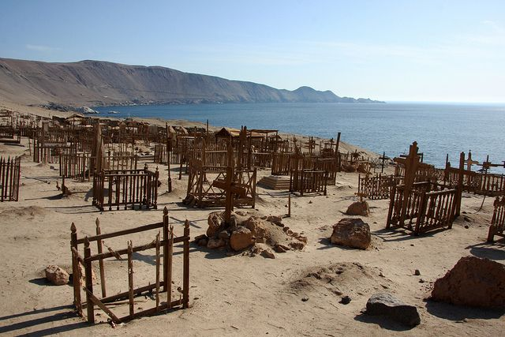

The Saltpeter Silence
HUMBERSTONE
Once a thriving nitrate mining town in the Atacama Desert, Humberstone is now a sun-bleached UNESCO World Heritage site. Abandoned in the 1960s, its theater, hotel, and worker houses stand perfectly preserved in the dry desert air, whispered to be inhabited by the spirits of those who worked the "white gold."

Port of Forgotten Echoes
PISAGUA
Once a bustling port town on Chile’s northern coast, Pisagua thrived during the late 19th and early 20th centuries as a key hub for exporting nitrate. Its theaters, churches, and port facilities reflected prosperity, but the town later became infamous as a detention site during periods of political repression. Today, Pisagua is semi-abandoned, with atmospheric ruins that tell a layered story of industrial wealth, cultural life, and historical memory, making it a haunting yet compelling destination for heritage tourism.